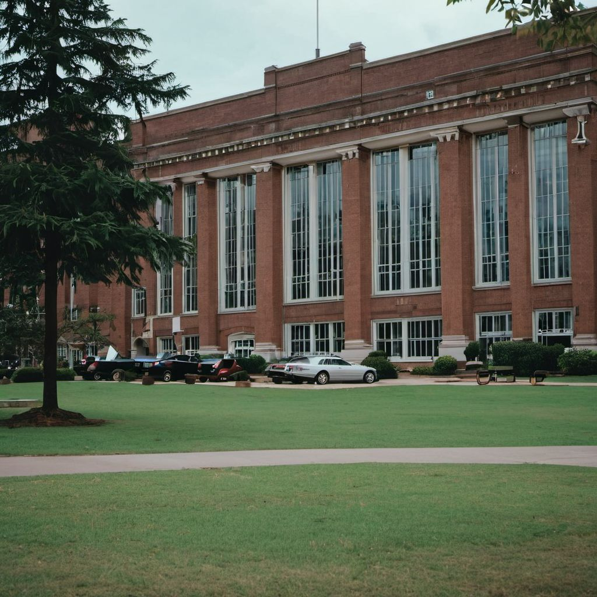
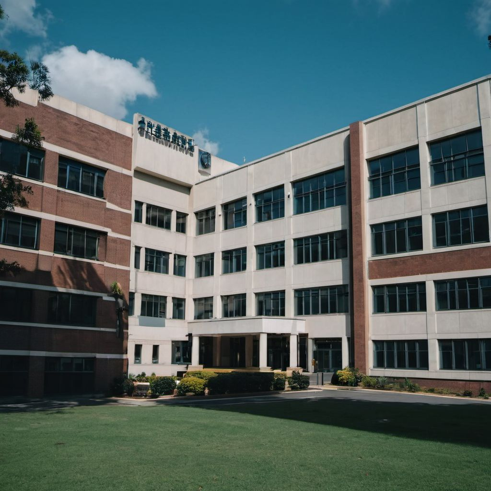

VISION OF THE DEPARTMENT:
Our vision is to create a center of excellence where students gain a deep understanding of cutting-edge technologies in instrumentation and automation. We aim to instill in our students the passion for precision, efficiency, and creativity in designing systems that monitor, control, and optimize complex processes across various industries.


RESEARCH TRUST AREAS
Sensors and Transducers:
Signal Processing and Data Analytics:
Control Systems and Automation:
Industrial Automation and Robotics: